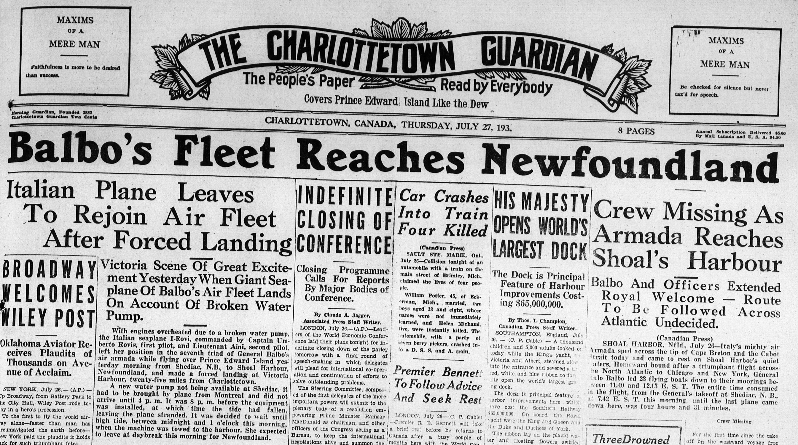
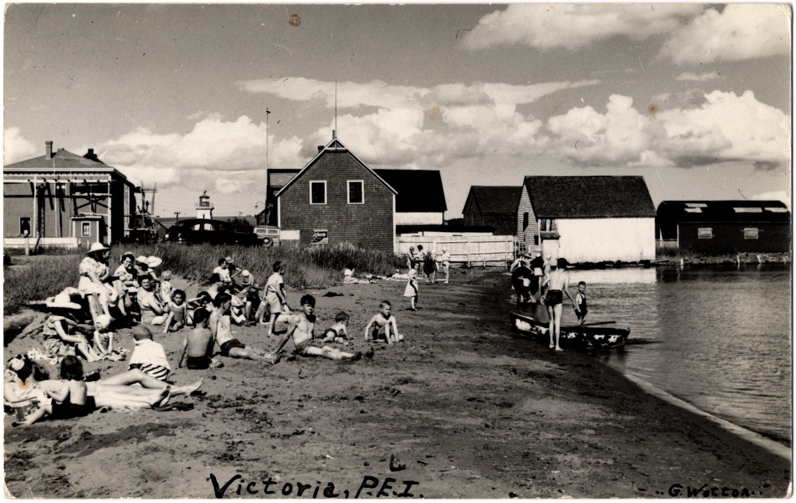
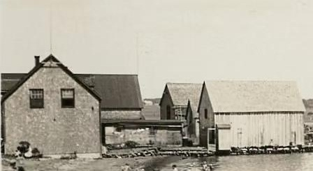
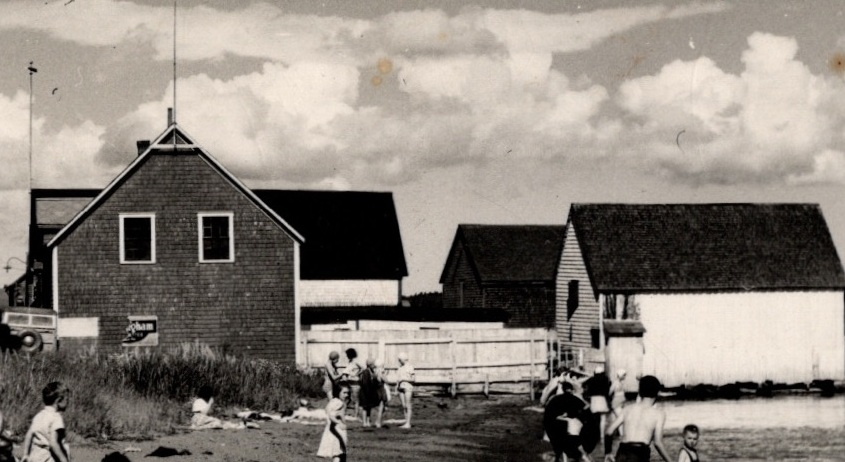

Balbo’s 1933 Flight: Captain Rovis at Victoria, P.E.I.
The boys have come right down to the water. Men stand beside them, hands on hips or tucked into their pockets, looking up at an aircraft whose two hulls have nosed into a Victoria beach. Above their heads, two engines sit one behind the other, their workings exposed. There is plenty to see, and nobody seems inclined to keep much distance.
It is July 26, 1933. Captain Umberto Rovis has brought an Italian flying boat down off Prince Edward Island with an overheating engine, interrupting the homeward journey of Italo Balbo’s 1933 transatlantic flight. Seven real photo postcards in the collection, 2764 through 2770, follow the unexpected visitor from the shore, from a boat and from close beside the engines. Together they give Victoria’s part in an international adventure an unusually intimate scale.

One aircraft drops out
Rovis commanded I-ROVI, a Savoia-Marchetti S.55X. It was one of the twenty-four aircraft returning across North America with Italo Balbo after the celebrated flight to Chicago. The expedition displayed Italian aviation on a grand scale and served the publicity ambitions of Mussolini’s Fascist regime. On July 26 the next leg was from Shediac, New Brunswick, to Shoal Harbour, Newfoundland. Twenty-three aircraft reached the Newfoundland stop that day. Rovis’s ended up beside an Island beach.
Three more postcards in the collection put the Victoria photographs in the company of the larger fleet. 3739 and 3740 are captioned “Balbo’s Seaplanes” and “Longueuil—1933.” Both carry the photographer’s credit on the back: L. Charpentier, 41 Notre Dame Est, Montreal. One brings a twin-hulled aircraft almost nose to nose with the viewer; the other follows a line of flying boats receding across the water.


In 4056, three flying boats share the water with small boats and their occupants. Its wooded shoreline has yet to be identified. It adds another view of the armada and the people drawn towards it, an encounter repeated on a much more intimate scale at Victoria.

On the Guardian’s front page
The next morning, Islanders could read about it under the Guardian’s banner headline, “Balbo’s Fleet Reaches Newfoundland.” A second headline brought the story home: “Italian Plane Leaves To Rejoin Air Fleet After Forced Landing.” The July 27 front page reported a landing at 9.35 a.m., a tow to the beach by C. F. Miller, and a replacement pump brought from Montreal. The pump arrived at four in the afternoon; by eight it was installed, but the falling tide had left the aircraft stranded. The tow back into the harbour had to wait until around midnight.

The news travelled well beyond the Island. A Canadian Press dispatch from Victoria Harbour appeared in the Lethbridge Herald on July 26, and the Daily Iowan carried an Associated Press report the next morning. The Island’s unplanned stop had become part of the international flight’s news.
Victoria, over the wireless
The flight’s radio traffic brings us closer still. A published transcription of the wireless notebook kept by Ezio Vaschetto aboard I-NANN records Rovis reporting a sudden rise in the rear engine’s temperature. Lieutenant-Colonel Ulisse Longo turned his aircraft back to investigate. Rovis signalled that he needed no rescue, and Longo’s group continued on its way.
Another message follows the disabled aircraft towards shore: Rovis suspected the water pump and was under tow to Victoria. Balbo then told the support officer at Shediac, Campanelli, to use a Canadian police seaplane to reach the Island with spare equipment. The reply was brisk: Campanelli was already there. Balbo answered with a “Bravo” for anticipating his instructions.
An Italian newspaper report published on July 28 confirms the essentials: trouble with the rear engine’s cooling, a landing near Cape Traverse and a tow to Victoria. These messages and reports put the beach in direct communication with the rest of the expedition.


The men aboard I-ROVI
Rovis had come to flying by way of the sea. Born at Pedena in Istria in 1901, he attended the nautical institute at Trieste and then the naval academy at Livorno. He qualified as a pilot at the seaplane school at Taranto in 1923. By 1932 he had joined the school for long-distance flying over the sea, the preparation for the Atlantic expedition that would bring him to Victoria. His career is outlined in the aviation history S.55 story, published in 1997.
The same book’s crew photograph and roster supply three more names: Lieutenant Giuseppe Aini, the second pilot; Sergeant Carlo Cipollini, the mechanic; and Spartaco Martinelli, the radio operator. Their surnames also appear in the Canadian Press report from Victoria. The Guardian adds a fifth man: an aeronautical engineer named Mauscalchi, travelling as a passenger. Cipollini’s was the trade most urgently needed on the beach; Martinelli’s kept the stranded aircraft in touch with help.

Here the photographer leaves the machinery for a moment. An airman and Mr. Compton stand side by side, while other people crowd into the edges of the picture. Compton’s first name remains elusive. The handwritten caption gives us his surname; the photograph preserves the encounter.
“Not know; but hope”
The Guardian’s continuation on page 3 lets us hear Rovis himself. Asked whether Balbo would wait for him in Newfoundland, he shrugged: “Not know; but hope.” Asked about an emergency landing in the Atlantic, he explained that in calm water they could land and wait as they had here. Rough water was another matter: a tumbling gesture of his hand supplied the frightening end of that answer.
The welcome in the United States had been exhausting. “Too much!” was his verdict. At Victoria there were more visitors, including Dr. J. S. Jenkins and Mrs. Jenkins, Judge Arsenault, Cyril Arsenault and Father MacIntyre, who drove out from Charlottetown. The priest had spent ten years in Rome and spoke Italian. Rovis had to decline their invitation to visit the city.
A beach becomes a workshop
The Guardian names A. P. Ceretti, master diver at Tormentine pier, as the interpreter arranged through C.N.R. officials. Captain Campanelli came from Shediac in an R.C.M.P. seaplane piloted by Squadron Leader F. C. Higgins. Around the work, the crowd kept growing. The visitors posed for photographs and answered questions in the English they could manage.
Harry Holman brought this episode to a modern audience in “Italians land in Victoria”, later illustrating his account with postcards from this collection. The newspaper’s description of the crowd and the willing subjects fits the cards beautifully: people have gathered close, the men beside the engines look towards the camera, and somebody has persuaded the pilot to stand with Mr. Compton.

The same beach, without the aeroplane
Postcard 4701, signed G. Wotton, brings us back to this waterfront on a bathing day. Families sit on the sand and children play at the water’s edge. Behind them stands the same shingled building seen at the left of postcard 2764: a gable with two upstairs windows and a slender flagpole rising above its peak.



Follow the roofs from left to right in the two details. First comes the broad shingled gable with its paired windows; next, the smaller gabled shed set farther back; then the larger pale shed standing at the water. Their shapes, spacing and order identify the spot. The paint and fencing have changed, but the waterfront is unmistakable. In 2765, a little lighthouse also appears to the left of the shingled building, just as it does in Wotton’s beach view. These are photographs of the same place on different occasions.

The postcard taken from a boat turns the view around. Now we can see the beach, the trees and the people against which the aircraft had settled. The front views make it seem enormous; this one restores the village around it. The photographer moved far enough to give us both experiences.

On July 27, I-ROVI flew on to Newfoundland. The next morning’s Guardian reported that Rovis and his four companions had arrived, making the fleet complete again. A Stefani dispatch printed in L’Avvenire d’Italia confirms the same date.
The visitors left souvenirs as well as photographs. Under “Valuable Autographs,” the Guardian of August 5 reported that Edward J. Dawson of Victoria had obtained all five men’s signatures in his album. He told the paper that he had not yet learned Italian, but was proud of his keepsake from overseas. The postcards and Dawson’s album belong to the same impulse: something extraordinary had come to the village, and people wanted to keep a piece of the day.
What became of the captain?
Rovis continued flying. In 1937, by then a major, he took part in the Istres–Damascus–Paris air race. That December his career ended in another aircraft, a Savoia-Marchetti S.81. On December 14, 1937, it crashed in poor weather near Travesio in northeastern Italy. Rovis died with fellow pilot Giovanni Miragoli and mechanic Mario Baggio.
A roadside memorial near Usago remembers the three men. Giorgio Caregnato’s illustrated account in Il Barbacian in 2022 describes the monument, its broken propeller and its care by local Alpine veterans’ groups. The inscription gives Rovis the title “Pilota Atlantico” — Atlantic pilot.
At Victoria, Rovis Beach Lane carries his name. These seven postcards preserve something smaller and more immediate: the open engines, the men standing beside them, Mr. Compton posing with a visitor, and the boys who came down to see what had arrived on their shore.